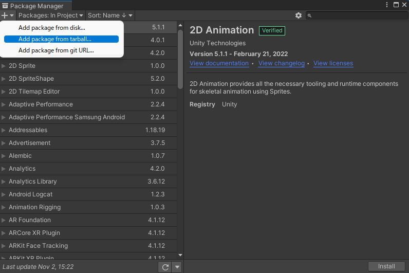

セットアップの手順
本書では、ツールのセットアップ手順について記載しています。
Unityのダウンロードとインストール
- Unity Hub をこちらからインストールします。
- Unity Hub とは、Unityのお好きなバージョンをインストールして起動することのできるソフトウェアです。
- Unity Hubを起動し、左のサイドバーからインストール → 右上のボタンからエディターをインストール をクリックします。

Unity 2022.3 で始まるバージョンを選択し、インストールを押します。
Unityプロジェクトを作成
Unity Hub を起動します。
左サイドバーの プロジェクト を押し、右上の 新しいプロジェクト ボタンをクリックします。
新しいプロジェクトの設定画面で、次のように設定します。
- 画面上部の
エディターバージョンを2022.3で始まる番号にします。 - 画面中部の
テンプレートはHigh Definitaion 3Dを選択します。 - 画面右下のプロジェクト名をお好みのものに設定します。
プロジェクトを作成ボタンを押します。
ツールをUnityにインポート
- 作成したプロジェクトをクリックすると、Unityが起動します。
- Unityが起動したら、以下の各ツールのリリースページからtgzファイルをダウンロードします。
Note
git指定で導入する方法は以下を参考にしてください。
SDKの使い方:GitのURL指定で導入する方法
- ダウンロードできたら、Unityのメニューバーから
Window→Package Managerを選択します。 - Package Manager ウィンドウの左上の
＋ボタンからAdd pacakge from tarball...を選択します。

- 先ほどダウンロードした 各ツールの tgz ファイルを指定します。するとウィンドウのパッケージ一覧に各ツール名が表示されます。

- 全てのツールを導入したら、Package Manager ウィンドウを閉じます。
Unityプロジェクトの設定
Unityのプロジェクト設定をします。メニューバーから Edit → Project Settings… を選びます。
Project Settings ウィンドウの左側のパネルから「Player」を選択し、「Api Compatibility Level」が「.NET Framework」ではない場合「.NET Framework」に変更して設定ウィンドウを閉じます。
事前準備
PLATEAUの都市モデル(CityGML)データの用意
事前にG空間情報センターの3D都市モデル（Project PLATEAU）ポータルサイトから景観計画・協議を行いたいエリアの都市モデルデータ(CityGMLファイル一式)をダウンロード、解凍してください。
Note
都市モデルデータには地形(demフォルダ), 建築物(bldgフォルダ)が含まれている必要があります。
都市モデルのインポート
都市モデルインポート画面を開く
メニューから PLATEAU->PLATEAU SDK を選択します。
表示されるウィンドウで都市インポートの設定を行います。インポート元を選択し、基準座標系を選んで「範囲選択」ボタンを押してください。インポート元は、ローカルの場合は 「udx」という名前のフォルダの1つ上のフォルダになります。
詳しくは PLATEAUマニュアル: インポート をご覧ください。
範囲選択
範囲選択画面では、マウスホイールの上下でズームイン・ズームアウト、右クリックのドラッグで視点移動します。オレンジ色の球体をドラッグして範囲を選択し、シーンビュー左上の「決定」ボタンを押します。
インポートに含める地物の種類を選択します。 景観まちづくり機能を利用するには、次をすべて満たす設定にしておく必要があります。
- 「建築物」と「土地起伏」で、「インポートする」にチェックが入っていること
- 「建築物」と「土地起伏」で、「MeshColliderをセットする」にチェックが入っていること
- 「建築物」で、「モデル結合」はそのまま（主要地物単位）にしておくこと

設定したら「モデルをインポート」ボタンを押します。そのままウィンドウを下にスクロールすると処理の進行状況が表示されるので、すべて「完了」になったらインポートは完了です。
初期設定機能の実行
- PLATEAU→InitialSettingsの順に選択し、初期設定画面を開きます。

実行に必要なコンポーネントがシーン上に全て揃っている場合、「実行」ボタンが押せる状態になります。
初期設定画面の「実行」ボタンを押して、初期設定の処理を開始します。
実行に必要なコンポーネントがシーン上に全て揃っていない場合、実行可能な状態にした後、「チェックリストを更新」ボタンを押すことで、「実行」ボタンが押せる状態になります。
「チェックボタンを更新」ボタンの下に「初期設定が完了しています」と表示されたら、初期設定完了です。